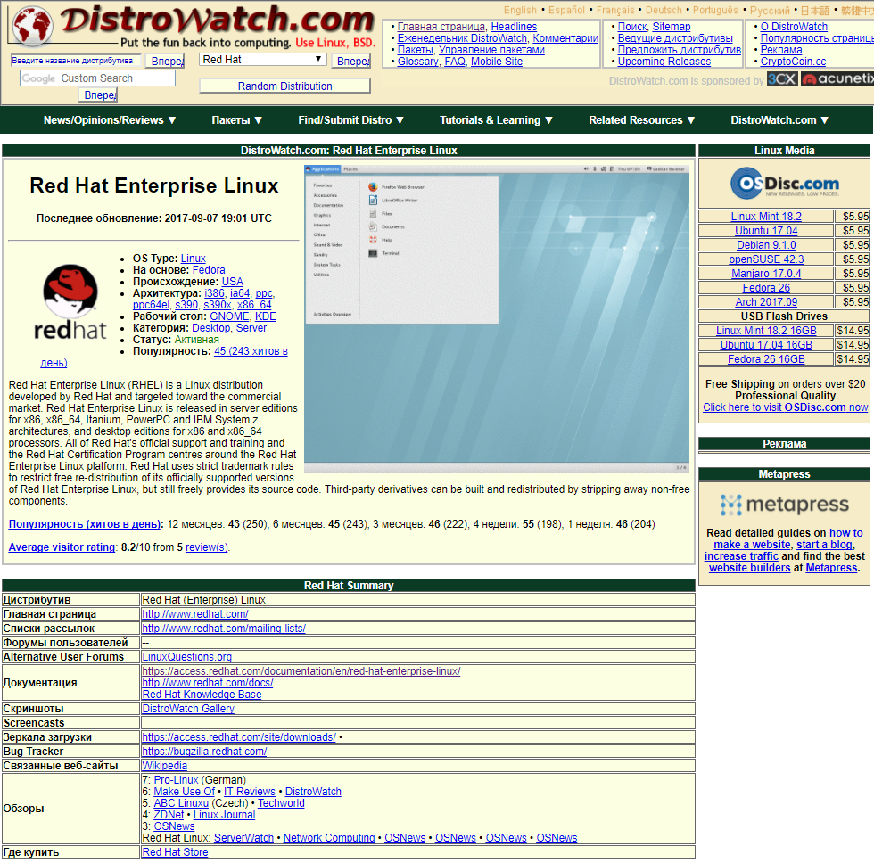
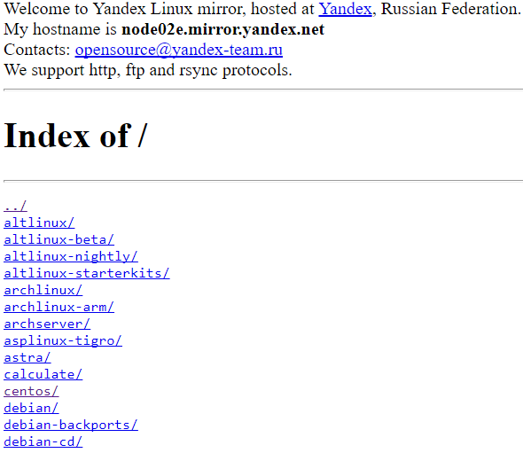

class: center, middle # Установка RHEL. --- layout: true # Начнём издалека --- - Кто нибудь ранее устанавливал RHEL или CentOS? Как вам? -- - Были ли у вас затруднения? Где и какие? --- layout: true # Много дистрибов красивых и разных --- - [Distrowatch](https://distrowatch.com/?language=RU) "Путеводитель по дистрибутивам" -- .center[] -- --- layout: true # Сначала скачаем --- - Как вы там бесплатные линуксы? .center[] -- ```bash >rsync -P -h rsync://mirror.yandex.ru/centos/7.4.1708/isos/x86_64/CentOS-7-x86_64-DVD-1708.iso . CentOS-7-x86_64-DVD-1708.iso 350.57M 7% 7.88MB/s 0:08:36 (xfr#1, to-chk=0/1) ``` --- - Ссылки на загрузку все статические -- - Протоколы rsync, http, ftp и даже torrent. .right[] -- --- layout: true # Как качать дистрибы от Red Hat? А что нужно качать, что есть? --- - Red Hat Enterprise Linux x86_64. - Образ * DVD Диск - Полный диск со всем необходимым. * boot.iso - Минимальный образ, только загрузка без пакетов. * Supplementary DVD - Доп. материалы. ~~Нужны как тот скрипач~~ .center[] - Распространяется по подписке. - Ссылка на загрузку динамическая. ``>curl -o rhel-server-7.0-x86_64-dvd.iso 'https://access.cdn.redhat.com//content/origin/files/sha256/8\ 5/85a...46c/rhel-server-7.0-x86_64-dvd.iso?_auth_=141...7bf' >$ curl -o rhel-server-7.0-x86_64-dvd.iso 'https://access.cdn.redhat.com//content/origin/files/sha256\ /85/85a...46c/rhel-server-7.0-x86_64-dvd.iso?_auth_=141...963' **-C -** `` -- - ~~Мойте руки перед едой~~ Проверяйте контрольные суммы. ``$ sha256sum rhel-server-7.0-x86_64-dvd.iso 85a...46c rhel-server-7.0-x86_64-dvd.iso`` - Всегда читайте [Примечания к выпуску Release Notes](https://access.redhat.com/documentation/ru/red-hat-enterprise-linux/ "Тут может быть важное") - Не забудьте про [Руководство по установке](https://access.redhat.com/site/documentation/ru-RU/Red_Hat_Enterprise_Linux/7/html/Installation_Guide/index.html "Почитай меня") --- # Создание инсталляционных образов. --- iso файл есть. Ну и что с ним делать? -- + Записать на DVD болванку. .center[] -- + записать образ на флешку. * linux `` # dd if=/image_directory/image.iso of=/dev/device bs=blocksize`` -- * Windows "Fedora USB Creator"(RIP), [Rufus](https://rufus.akeo.ie/?locale=ru_RU)  [UNetbootin](http://unetbootin.github.io/)  [LiLi](http://www.linuxliveusb.com/en/home)  UTmake и это не полный список... -- + Сходить в магазин за новыми гиковскими железками https://geektimes.ru/post/220007/ .center[] + Всё сложно Docker, Vagrant, Packer, PXE with Network Install и т.д. -- # Интерактивная установка. - Поехали! - boot: ? # эм это что такое? - anaconda - терминалы - графическая и текстовая установка - firstboot -- 3. Автоматизация установки с помощью Kickstart. - Kickstart? Что это Беримор? - Формат kickstart. Написание с нуля - проверка на синтаксис: vsvalidator и/или на кошках. - kickstart для ленивых и спешащих. -- 4. Настройка автоматизации Kickstart. -- # Introduction